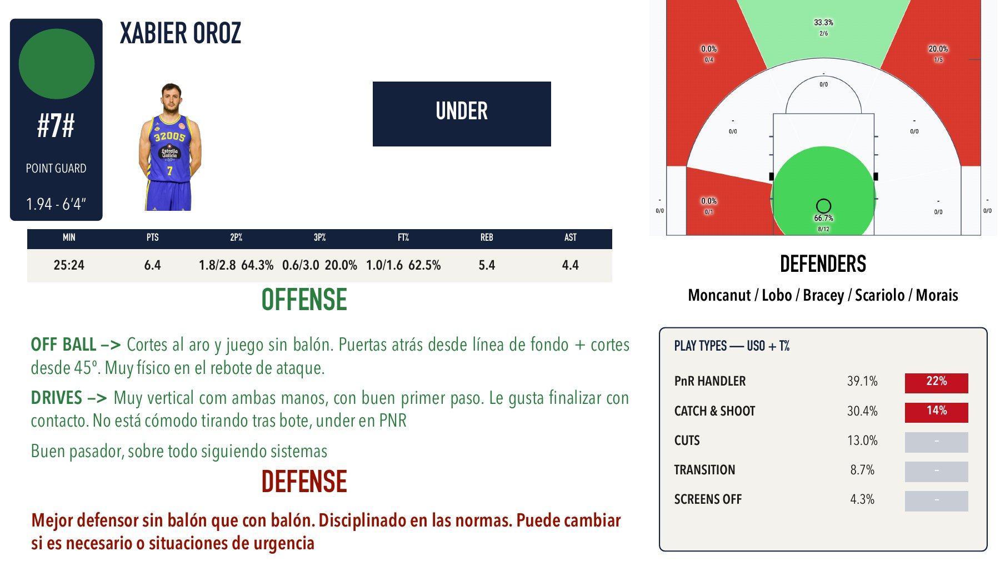

Prepared for the coaching staff of Anorthosis Famagusta BC as a sample of our work. Three blocks: how our own club plays, how the opponent plays and who is who on their roster.
How our own club plays: what works and what does not. This analysis starts from the last game, and the data builds up round by round.
How Ourense attacks and how they defend. Click any bar in the analysis to filter the rest of the charts.
Opens on YouTube, in a new tab.
One profile per Ourense player: role, offensive and defensive tendencies, shot chart, play types and assigned defenders.
To save a profile, right-click the image or press and hold it.

Opens on YouTube, in a new tab.